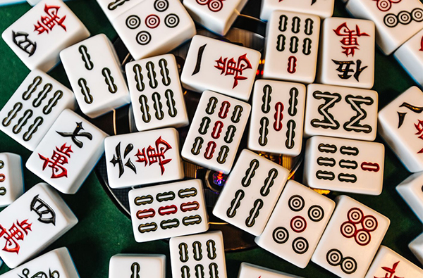
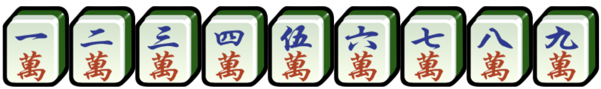
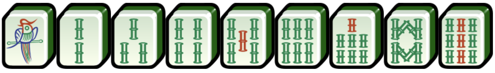
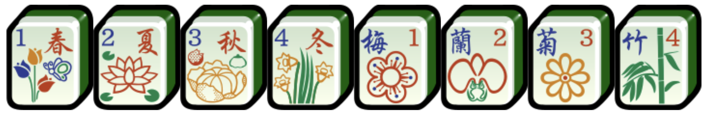
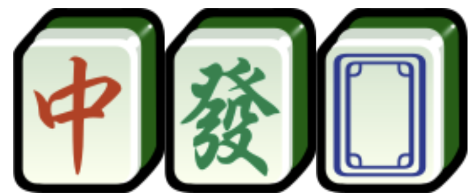
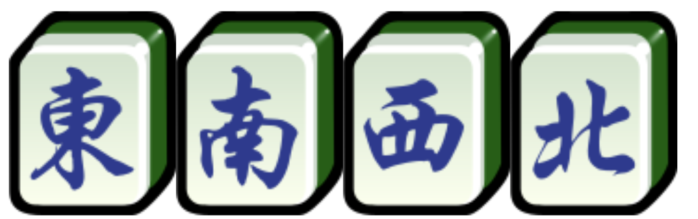

麻雀，又稱麻將，是一種源自中國的棋牌類遊戲。
遊戲參與者多數為四人。
麻雀在各地也有不同計算的方法，但整副麻雀的數量是一樣的。
全牌共有144隻牌，能分為5類：
==========================================================================================================
分別有九款不同的牌，每款都各有四隻。

分別有九款不同的牌，每款都各有四隻。
分別有九款不同的牌，每款都各有四隻。

分別有八款牌，分別是「春」、「夏」、「秋」、「冬」，「梅」、「蘭」、「菊」、「竹」。

分別有七款牌，每款都各有四隻。

==========================================================================================================
🀄️香港麻雀短教學🀄️
"